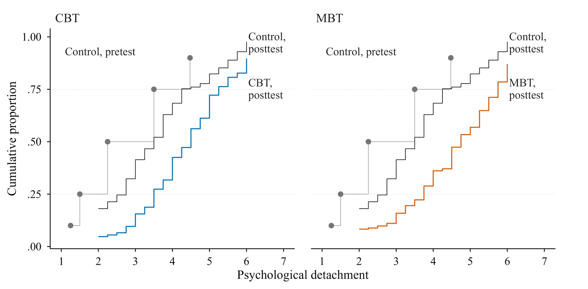
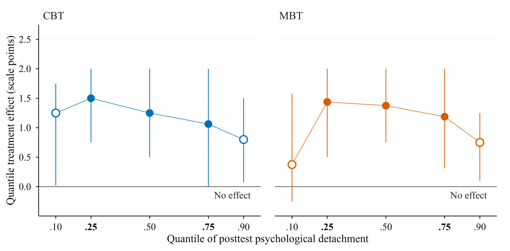

Summary
Trials of recovery training report mean gains in psychological detachment, but a mean does not show whether training helped the employees who detached least or those who already detached well. A compensation account predicts larger gains at the low end of the baseline distribution, and an accumulation account predicts larger gains at the high end. This paper tested the two accounts in a prespecified reanalysis of a randomized trial among German employees (N = 393; 247 with posttest data). The trial compared a wait-list control with a 6-week cognitive-behavioral recovery training (CBT) and a 6-week mindfulness-based training (MBT).
Both trainings raised detachment at the mean baseline, by 0.89 scale points in CBT and 0.98 in MBT. Quantile effects were larger at the .25 than at the .75 quantile in both groups, but their intervals spanned up to two scale points. The baseline × condition interaction was −0.21 (95% CI [−0.50, 0.08]) for CBT and 0.04 (95% CI [−0.24, 0.33]) for MBT, and both intervals included zero. Dropout before the posttest was not detectably patterned by baseline detachment in any group. The data support neither compensation nor accumulation, and the intervals bound how large either pattern could be in a trial of this size.
Figures


What this does not show
Which employees gain most from recovery training. All three interval estimates for the primary tests included zero, and the quantile intervals were about two scale points wide.
Links
- Preprint: PsyArXiv, https://osf.io/preprints/psyarxiv/4hvqr_v1.
- Data (trial team’s deposit): https://osf.io/32rhy/
Monnot, M. J. (2026). Active recovery is not just for athletes: Employees need to train for recovery to enhance work. PsyArXiv. Preprint: PsyArXiv, https://osf.io/preprints/psyarxiv/4hvqr_v1.